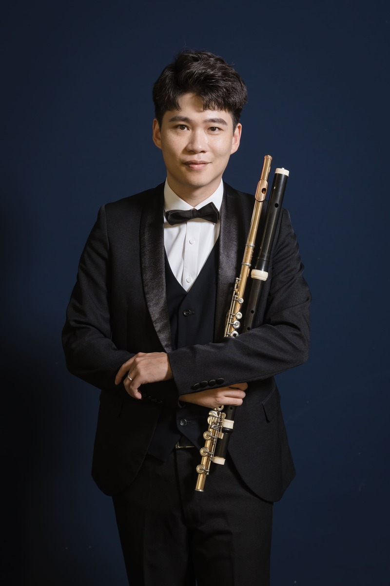

ABOUT THE ARTIST
關於蔡建緯
蔡建緯為旅德長笛演奏家與音樂教育者，曾接受德國音樂院最高階演奏家文憑訓練， 長期專注於古典長笛演奏、音色美學與音樂教育。

對他而言，長笛不只是旋律的呈現，而是一種呼吸、聲音與情感之間的精密平衡。
從德國嚴謹的音樂訓練，到舞台上的細膩詮釋，他持續探索長笛音色中溫潤、清透而富有敘事性的可能。
GERMAN FORMATION
德國音樂院專業養成
在德國求學期間，蔡建緯接受紮實而高度專業的古典音樂訓練， 從演奏技巧、音色控制、樂句處理到作品詮釋，逐步建立成熟而細膩的音樂語言。
01
Konzertexamen
最高演奏家文憑訓練
02
Professional Discipline
嚴謹的聲音訓練與作品詮釋
03
Artistic Sensibility
細膩、溫潤而具敘事性的音色追求